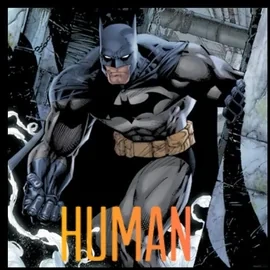
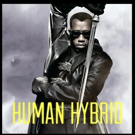
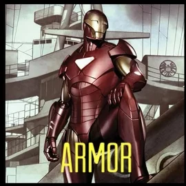
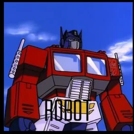
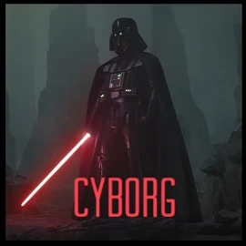
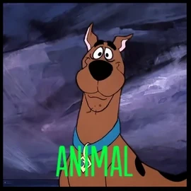

<!DOCTYPE html>
<html lang="en">

<head>
    <meta charset="UTF-8">
    <meta name="viewport" content="width=device-width, initial-scale=1.0">
    <title>WEBROCA</title>
    <style>
        body {
            background-color: rgb(41, 40, 40);
        }

        .box {
            background: #09f;
            width: 75px;
            height: 75px;
            margin-bottom: 4px;
            border-radius: 20px;

            &.purple {
                background-color: rebeccapurple;
            }

            &.yellow {
                background-color: yellow;
            }
        }

        .grid {
            display: grid;
            grid-template-columns: repeat(3, 1fr);
            grid-gap: 5px;

            img {
                aspect-ratio: 1/1;
                width: 100%;
            }
        }
    </style>
</head>

<body>
    <!--<div class="box"></div>
    <div class="box"></div>
    <div class="box"></div>
    <div class="box"></div>
    <div class="box"></div>
    <div class="grid">
        
        
        
        
        
        
        
        
        
    </div>-->

    <div class="box purple"></div>
    <div class="box blue"></div>
    <div class="box yellow"></div>
    <footer>
        <button id="play">reproducir</button>
        <button id="pause">pausar</button>
        <button id="resume">resumir</button>
        <button id="reverse">revertir</button>
        <button id="restart">reiniciar</button>
        <button id="turbo">turbo</button>
    </footer>
    <small id="log "></small>
    <script src="https://cdn.jsdelivr.net/npm/gsap@3.13.0/dist/gsap.min.js"></script>
    <script>
        /*gsap.to('.box:first-child',{
            x:100,
            duration:1
        })
       gsap.to('.box:nth-child(2)',{
            x:200,
            duration:1
        })
        const boxes = document.querySelectorAll('.box')
        boxes.forEach((box, i) =>{
            gsap.to(box,{
                x:() => Math.random() * 200,
                duration:1,
                delay: i * 0.4
            })
        })*/

        /*staggered animations: evita el uso del foreach
        stagger es el tiempo
        repeat veces, -1 para infinite, 0 una vez
        yoyo para que vuelva
        gsap.to('.box', {
            x: 200,
            duration: 1,
            rotate: 360,
            scale: .5,
            repeat: 5,
            yoyo: true,
            stagger: 0.2
        })

        
        gsap.to('.box', {
            x: 500,
            duration: 3,
            rotate: 180,
            scale: .25,
            stagger: {
                each: 0.5,
                repeat: 3,
                yoyo: true
            }
        })*/

        /*gsap.to('.grid img', {
            duration: 2,
            scale: .9,
            opacity: 0,
            stagger: {
                each: 1,
                repeat: -1,
                yoyo: true,
                from: 'random' /* orden: random, center, edges, end ..*/
        /*}
    })*/

        /*gsap.to('.box.purple', {
            x: 200,
            duration: 2,
            rotate: 360,
            scale: .75,
            repeat: -1,
            yoyo: true,
            ease: 'back.inOut'
        })
        gsap.to('.box.blue', {
            x: 200,
            duration: 2,
            rotate: 360,
            scale: .75,
            repeat: -1,
            yoyo: true
        })*/
        // Creamos una linea de tiempo donde indicamos en que orden se hacen las animaciones.
        const tl = gsap.timeline({
            defaults: {
                duration: 2
            }, 
            onComplete: () => {
                window.log.innerHTML +="Timeline completada"
            }
        })
        tl
            .to('.box.purple', {
                x: 200,
            }, 1) //Espera un segundo al empeza
            .to('.box.blue', {
                duration: .5,
                y: -80
            }, 2) //indica que empiece a la vez que el anterior
            .to('.box.yellow', {
                x: 100,
                y: -158
            }, 3) //"=+1" Espera un 1 segundo al empezar cuando acaba el anterior  

        window.play.onclick = () => {
            tl.play()
        }
        window.pause.onclick = () => {
            tl.pause()
        }
        window.resume.onclick = () => {
            tl.resume()
        }
        window.reverse.onclick = () => {
            tl.reverse()
        }
        window.restart.onclick = () => {
            tl.restart()
        }
        window.turbo.onclick = () => {
            tl.timeScale(5)
        }

    </script>
</body>

</html>